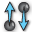

 Vector Field Creator
Component Index > SPM > Utilities > VFC
Modifies or creates a new vector field
Inputs
| Name | ID | Description | Type |
|---|---|---|---|
| P | List of points, where each point relates to a vector (parallel to V) | Point | |
| V | List of vectors, where each vector relates to a point (parallel to P) | Vector | |
| D | List of dynamics to modify the vector field with | Generic Data | |
| S | Optional surface to create geodesic curves between points in space instead of direct lines | Surface |
Outputs
| Name | ID | Description | Type |
|---|---|---|---|
| P | Output points (parallel to V) | Point | |
| V | Resultant field of vectors (parallel to P) | Vector |
Copyright © 2016 Robert McNeel & Associates.